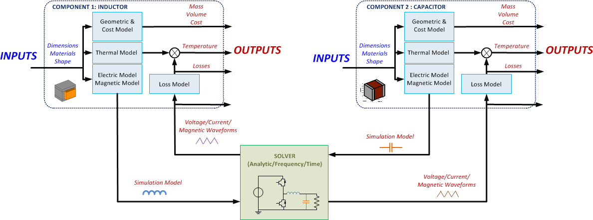
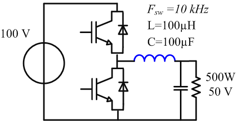
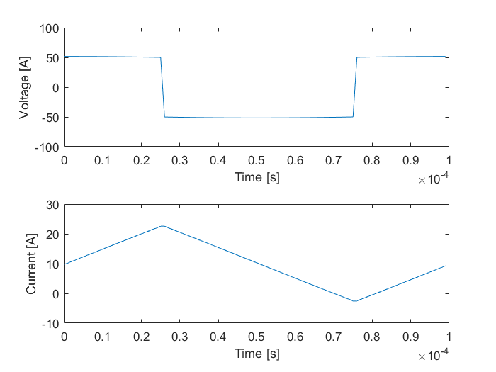
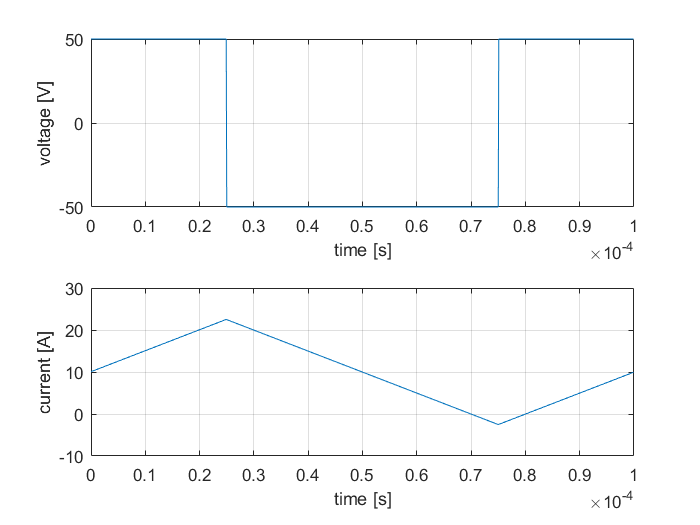
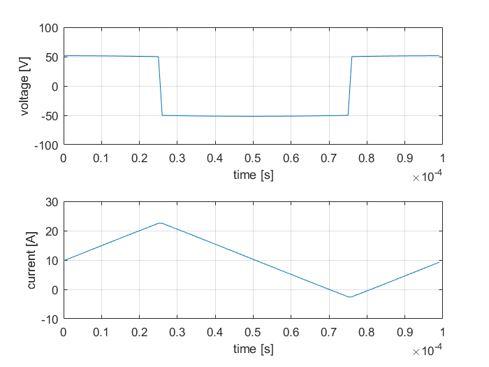

Set Excitations procedure
Excitations
The excitations can be defined by two differents ways:

Solverless design of a component with a known impedance
When a converter has been simulated with a conventional simulation software and the user wants to study a specific component (determine its losses, temperature, etc) using OpenComp3d it is possible to export a current or voltage waveform from the simulation and see how the component reacts.
It is also possible to insert the corresponding OpenComp3d component in a loop to design the component (determine its weight, size, cost, losses...) by imposing the value of the impedance as a constraint and maintaining the initial excitation determined by the simulation software through all the iterations.
For the example, we will consider the inductor at the output of the DC-DC converter as shown in the figure below.
We suppose that all the system values are known (therefore the inductance value) and a designer has performed a simulation using classical time-domain solvers (PSIM(TM),PLECS(TM),SABER(TM),...).
myInd = Comp3d.InductorCustomEI; myInd.computeModelParameters;
We load for example a file containing a waveform variable "myInductorEIexcitationData"
load InductorExcitationsExample.mat subplot(2,1,1); plot(time,voltage); xlabel('Time [s]'); ylabel('Voltage [A]'); subplot(2,1,2) plot(time,current); xlabel('Time [s]'); ylabel('Current [A]');
Then we load the excitations using the command variable|.setExcitations()| Ex.
myInd.setExcitations('time',time,... 'current',current,... 'voltage',voltage);
The component posses as well a built-in method to display the excitations
myInd.drawExcitations;
Open design with the analytic solver
We may want to design a component to be used in a circuit with a known topology, but leave as many degrees of freedom to allow finding the best solution. This is typically the case when we want to design the smoothing inductor of a buck converter; the voltage applied to the inductor is known, but the current waveform depends on the value of the inductor and it is not easy to guess which value of inductor or ripple gives the smallest magnetic component.
Therefore we should allow varying the inductor throughout the optimization process which requires determining the current waveform within OpenComp3d at each iteration. An internal analytic solver is provided for this purpose.
For the buck converter example, the analytic solver to determine the waveforms of the output inductor has been developped in AnalyticalExcitation.InductorExcitation
myInductor = Comp3d.InductorCustomEI('nTurns',15,'record',true,'airGap',5.37e-4,'level',1); myInductor.excitationsElectricAnalytic = AnalyticalExcitation.InductorExcitation; myInductor.excitationsElectricAnalytic.vHv = 100; myInductor.excitationsElectricAnalytic.vLv = 50; myInductor.excitationsElectricAnalytic.iDc = 10; myInductor.excitationsElectricAnalytic.fSw = 10e3; myInductor.excitationsElectricAnalytic.nSample = 1000; myInductor.drawExcitations();
As shown, the waveforms are automatically calculated
A general solver for OpenComp3d
For the example, we will consider the inductor at the output of the DC-DC converter as shown in the figure above. To get more information about object creation refer here. To get more information about the description of the circuit go here (A COMPLETER) As it is shown the inductor object is inserted between the nodes 3 and 4 using the netlist description. To store the automatically the waveform of the current the "record" property of the object is set to |true|myInd = Comp3d.InductorCustomEI('nTurns',15,'record',true,'airGap',5.37e-4,'level',1); myInd.computeModelParameters; circuit = Ckt.CktComposite(); n = circuit.createNode(4); circuit.addGnd(n(2)); circuit.addCkt(Vdc(100),{n{1},n{2}}); convert = Chopper(); convert.modul.fCar = 10e3; convert.opPoint.alphaBuck = 0.5; circuit.addCkt(convert,{n{1},n{3},n{2}}); circuit.addCkt(myInd.electricModel,{n{3},n{4}}); circuit.addCkt(Capacitor(100e-6),{n{4},n{2}}); circuit.addCkt(Resistor(5),{n{4},n{2}}); solver = ConvertSystSolver; results = solver.simulate(circuit);
Warning: SimulationSolver.Facture: Ootee by default Warning: The electric model of Comp3d.InductorCustomEI: has changed
Once the simulation has been solved the excitations are loaded into the object, the waveforms are loaded using the instructions variable1 = variable2|.getSimulationData()| & variable2|.setExcitations|(variable1) Ex.
data = myInd.getSimulationData; myInd.setExcitations(data);
Once again the excitations can be displayed
myInd.drawExcitations;